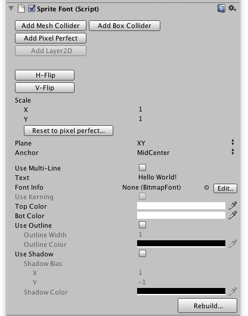

To create a sprite, you first Create an empty GameObject in the scene in Unity. Select the GameObject and choose the Menu Item: Component > ex2D > Sprite Font
After you add the SpriteFont Component it will also add Mesh Renderer, Mesh Filter and Layer2D components. Your GameObject will look like this in Inspector:

To make Sprite Font render text on the screen, you need to specific the BitmapFont asset for it. You can drag a BitmapFont asset into the Font Info property in the inspector.